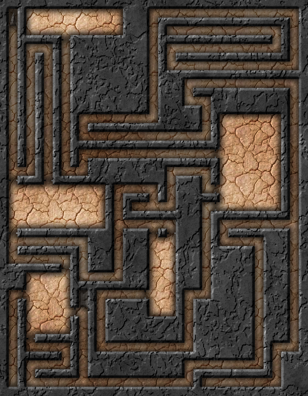

Making the dungeon prettier
"Oh look. Another plain, featureless stone wall and plain, featureless stone floor with a plain, featureless stone ceiling. I absolutely love the way these dungeons look, Kovath. The constant sameness isn't at all boring or monotonous."
"I'm glad you lik-- wait, from your tone that was sarcasm. What's your problem now?"
"Well, can't we - I don't know - spruce things up a little? A mosaic here, some rough-hewn stone there, maybe some cave paintings?"
"I am not letting you hang Zarlazz Junior's fingerpainting in our dungeon. This is procedural generation, not arts and crafts with Miss Nuggurath."
"Look, just because you don't have a family doesn't mean you should --"
"Okay, okay. We can make the dungeon 'prettier' if you insist."
I've started doing a pretty simple thing to up my map game. It takes a plain black-and-white generated map and turns it into something a lot more visually interesting.
- Generate a dungeon you like and click Save as PNG.
- Open the saved file in GIMP.
- Use the Select by Color tool, click any white space on the map, and press Delete.
- Erase the doors, portcullises, and secret doors (a step you can skip once player maps exist).
- Run Filters → Dungeon Map Maker.
- Set the Template Color to black, set Template Colour Identifies to Walls, and set Fill Floor With to a pattern.
- Click OK, then File → Export and save.
The result is far prettier than anything the generator kicks out on its own. From there you can drop in a few objects and doors found online for something really sharp. The technique is handy even if you hand-draw a black-and-white map and just want to spice it up.

Feel free to share map-making tips of your own!